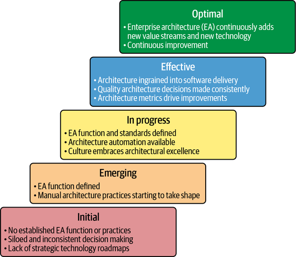
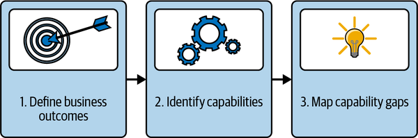
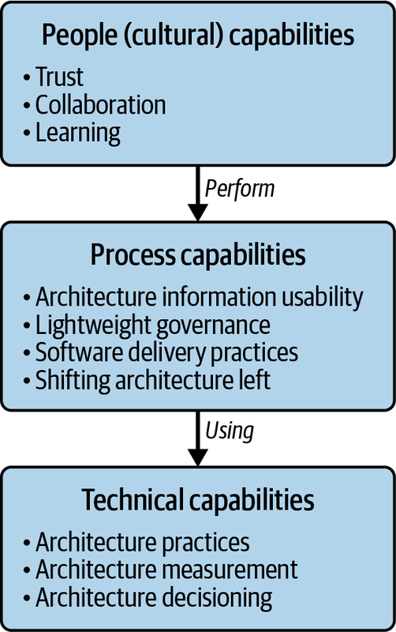

So far, this book has covered effective enterprise architecture, including key concepts, key objectives, and key principles. To apply this knowledge to your own organization, you first need to know where your organization currently is on its journey to establishing effective enterprise architecture, and for that you will conduct an assessment.
Maturity models are a fairly common type of assessment tool, made popular by capability maturity models (CMMs). Typically defining five levels—from initial to optimal—CMMs help simplify complex topics into a series of linear steps and benchmarks to assess performance. This process can help organizations understand the level that they are currently at, and what remains to get to where they want to be.
I have used maturity models to assess the current state of an organization, with an emphasis on process maturity and quality. In this experience, I did see some benefit to identifying the level that the organization was at and creating a roadmap to increase that level. I have even developed my own maturity models for things like platforms and have found benefit in determining what nonfunctional requirements (NFRs) needed to be in place for what level. In a similar vein, Figure 12-1 shows a high-level example of what an effective enterprise architecture maturity model could look like.
Using a step-like progression, this maturity model shows the clear difference from starting with nothing to ending with something quite optimal. However, I have come to realize that maturity models as assessment tools all too often fall short.

Wait, what? Yes, you read that right. Here’s why I have come to this, perhaps startling, conclusion:
Maturity models are static things, a snapshot of the time during which they were defined. As technology and business needs change, they may not go far enough to address the real gaps, the true competencies the organization needs to establish. They also imply that there is an end stage when you are done. This is a misnomer, because as technology changes and businesses evolve, so too should enterprise architecture.
With the diversity of organizations across industries and their usage of technology, it is highly improbable that a single maturity model could have enough context to be useful for all of them. In fact, interpreting the maturity model can lead to inconsistent results depending on the specific organizational context used for the interpretation.
Maturity models assume linear growth for all phases, yet reality is never a straight line. What happens when the assessment results are scattered across multiple levels?
Intended or not, they impart a negative connotation to the areas that are assessed as immature. Negative connotations can lead to defensive reactions rather than to constructive behaviors to fix the gaps.
So, what do you get instead of a fully baked maturity model? You get an assessment framework that relies on an outcome-based capability model.
Unlike a maturity model, an outcome-based capability model doesn’t define the bar for all of the practices that you should seek to achieve in striated levels. Instead, it is meant to be used as a dynamic aid to identify capability areas for continuous improvement. The enterprise architecture assessment framework adds to this concept by including a prioritization schema to focus on improving capabilities that will bring the most benefit. Figure 12-2 visualizes this assessment framework.

The first step of the enterprise architecture assessment framework is to figure out what business outcomes need to drive the capability model.
The first step is to define business outcomes as quantitatively as possible. Since enterprise architecture needs to have alignment across the enterprise to be successful, I highly recommend defining your business outcomes in collaboration with your key stakeholders to ensure a shared understanding of what enterprise architecture will seek to support and achieve. Thus, the business outcomes should be traceable to the results of an effective enterprise architecture function and practice.
Chapter 1 hit on a few general business outcomes of effective enterprise architecture:
Providing collective goals in the form of a shared destination state that crosses organizational boundaries will reduce duplication and align and focus priorities.
Providing clear standards with requisite enablement and enforcement allows for accelerated delivery of consistent, cost-effective, well-architected software products and services that are more stable and provide better experiences.
Making better architecture decisions enables responding to changes in a cost-effective way.
Although these could apply to your organization, there may be some specific other outcomes for your particular organization. For example, perhaps your organization is considering a merger or acquisition; that would be a key initiative for enterprise architecture to bolster. Or perhaps it is undergoing a major technology transformation, such as moving to the cloud. The major transformation would yield business outcomes that should be directly supported by enterprise architecture.
For example, an organization transitioning to the cloud could define business outcomes around migrating application workloads to the cloud, accelerating agility of application development, improving scale and resilience of applications, and improving spend efficiency. In this scenario, enterprise architecture can provide the holistic strategic thinking necessary to provide a data-driven approach to cloud migration. In more tangible terms, enterprise architecture can provide the cloud strategy to do the following:
Develop a powerfully secure, scalable, and resilient cloud platform.
Create reusable reference architectures and patterns to accelerate and streamline migration.
Identify interdependencies to determine the sequencing of migrations.
Define strategic roadmaps for new or enhanced technology capabilities needed to support the cloud and migrations.
By concentrating on the shared business outcomes, you can then figure out what needs to be true to get there, which brings us to the next step of the enterprise architecture assessment framework.
The next step of the enterprise architecture assessment framework is called identify capabilities. Just as Chapter 8 discussed capabilities in an architectural domain model providing key context, this step of the assessment framework is considering enterprise architecture itself as a domain. So, now you’re defining all the capabilities necessary to achieve the desired business outcomes that pertain to an enterprise architecture function and architecture practices.
Figure 12-3 shows an example of such a capability model. Using people (culture), process, and tools as broad categories, this capability model can be used to figure out the specific capabilities that an organization needs to strengthen to establish an effective enterprise architecture function and practice.

This capability model can and should be expanded and tailored to your organization based on analyzing people, process, and tools.
For example, let’s go back to the scenario of an organization going through a transformation to cloud technology. A major business outcome is to migrate applications to the cloud, as quickly and cost-efficiently as possible. As a result, enterprise architecture functions as defined in Chapter 1, of strategy, enablement, and oversight, may need the following tailored capabilities:
Cloud architecture skills
Cloud governance, cloud application standards, and cloud application modernization disposition framework
Cloud migration
Effective architecture practices in the context of operating and using the cloud could include the following nonexhaustive list of tailored capabilities:
Cloud application architecture, cloud engineering, and cloud certification
Cloud standards for FinOps, cloud standards for resiliency, cloud configuration management using enterprise architecture metamodel, cloud network management, cloud monitoring, and cloud security
Cost management, cloud billing, cloud service discovery, software-defined networking, cloud provisioning, cloud automation, and cloud policy controls
Once you have your tailored capability model, you can move on to the next step.
The next and final step of the enterprise architecture assessment framework is to perform a gap analysis using the capability model developed in the previous step. You may have to conduct research and interview several stakeholders to find out where there are capability gaps, with questions like the following:
What is challenging across the dimensions of people, process, and tools that makes it hard to achieve the desired business outcomes?
Do all the capabilities that you identified in the previous step have solutions?
Are any solutions suboptimal and, if so, why?
For example, for the enterprise architecture functions as defined in Chapter 1 of strategy, enablement, and oversight, questions might be similar to these:
Are they staffed with the right talent, which has the right skill sets to lead technology changes? Is the organization structured to use that talent effectively?
Are there well-defined and clear architecture standards? Are there well-established and easy-to-follow architecture processes? Is architecture information readily available? Are architecture templates reusable?
Are there easy and automated tools to support the architecture standards and processes? Is architecture governance automated?
For assessing enterprise architecture practices, an analysis could take a form like this:
Are roles and responsibilities in architecture decision processes clear and well understood? Is your talent equipped with the skills they need to be successful in fulfilling the role that they play in the enterprise architecture ecosystem? Do you have an organizational culture that is founded on trust and receptive to collaboration and reuse? Do stakeholders understand the roles of architects and the value that they bring? Do stakeholders adequately use architecture information?
Are there clear processes around making architecture decisions? Are architecture standards incorporated into software delivery processes? Is architecture ingrained into the fabric of the software delivery processes?
Are there tools that make it easy to perform architecture work? Are standards automated in terms of adhering to them and measuring compliance?
Once you have identified capability areas across people, processes, and tools that are weak and hinder the success of enterprise architecture, you then need to map these gaps to the following to prioritize them:
Impact and effort can be quantified with the scoring scale defined in Table 12-1.
| Score | Description | Impact (benefit) | Effort (duration + labor) |
|---|---|---|---|
| 1 | Low | Negligible (e.g., benefits are hardly felt and are not sustainable) | Minimal (e.g., within a few days, one person) |
| 2 | Medium-Low | Limited (e.g., benefits affect only a small population or are small improvements) | Small (e.g., within a few weeks, a few people) |
| 3 | Medium | Moderate (e.g., benefits are broader and are more noticeable) | Moderate (e.g., within a month or so, a team or so) |
| 4 | Medium-High | Broad (e.g., benefits affect a wide population and are sustainable) | Trending toward higher (e.g., within a quarter, a few or more teams) |
| 5 | High | Game changer (e.g., benefits are transformative, with huge return on investment) | High (e.g., several months, several teams) |
Applying this scoring scale to the identified capabilities results in the capability gap analysis. Using the earlier cloud example, this analysis could produce something like Table 12-2.
| Dimension | Capability | Gap | Impact | Effort |
|---|---|---|---|---|
| People | Cloud architecture | Talent lacks skills in developing cloud applications. | 5 - High | 3 - Medium |
| Process | Cloud governance | Governance processes exist for security and data, but not for how they apply to the cloud. | 5 - High | 4 - Medium-High |
| Architecture reviews | Architecture reviews currently do not look for cloud-specific elements and lack reference patterns. | 3 - Medium | 4 - Medium-High |
As this brief example shows, a quick scoring based on estimated impact and effort allows for priorities to take shape. It is likely that the skill deficiency would be the first capability area to be tackled, followed by the governance process.
Evaluating the state of your organization in the context of effective enterprise architecture is necessary to determine an enterprise architecture strategy. Maturity models are one form of assessment tool, but they are static, lack context, and can be oversimplified and prone to misinterpretation. Thus, instead of relying on a maturity model as an assessment tool, this chapter presented an assessment framework that relies on an outcome-based capability model.
By starting with defining shared business outcomes and tracing that directly to enterprise architecture efforts, you have begun to articulate the business case of how enterprise architecture will provide value to your organization. Next, by focusing on these outcomes to identify the capabilities needed to achieve them, and then performing a gap analysis, you will have produced a clear, holistic view of the capabilities that make the most sense in your organizational context to invest in.
Assessment durations can vary depending on the level of detail, engagement, and collaboration necessary. Typically, assessments of this nature should be timeboxed within one month, and done as part of an annual strategy cycle. Speaking of strategy, the next chapter discusses how you can build on your assessment to establish your own enterprise architecture strategy.